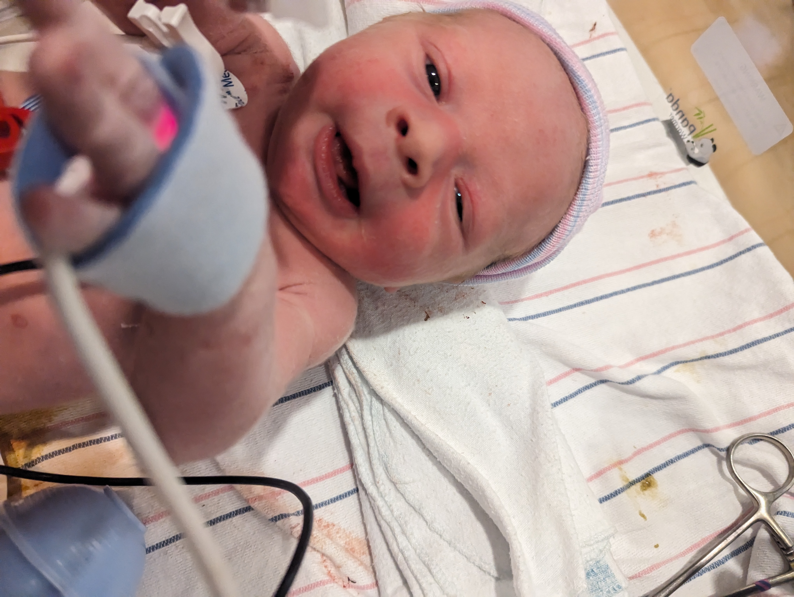
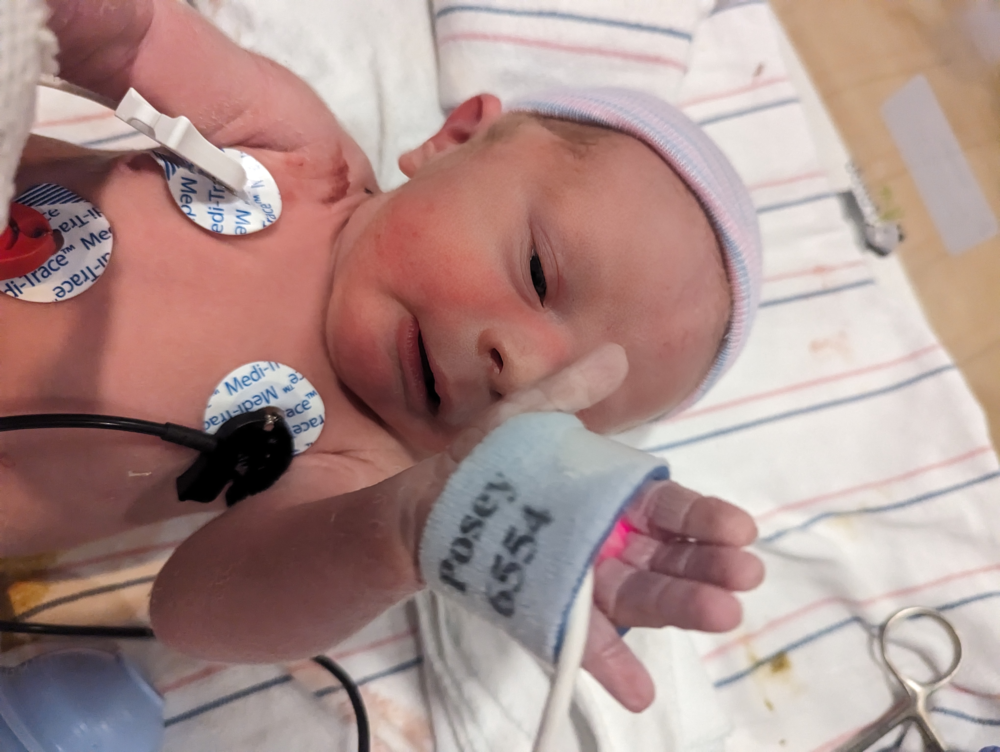
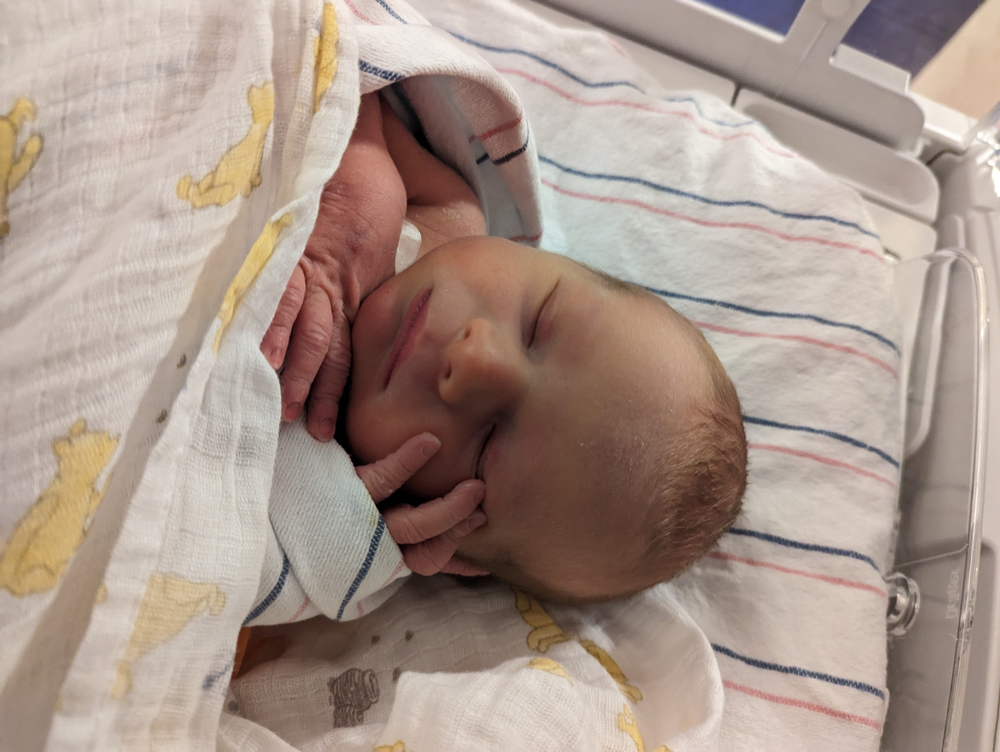
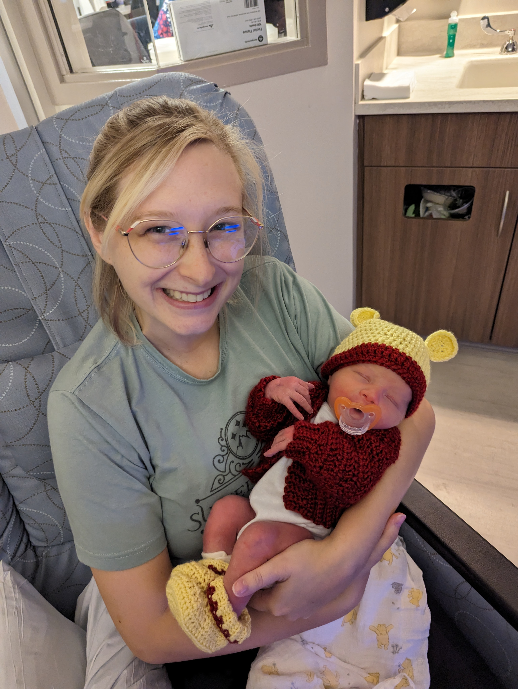
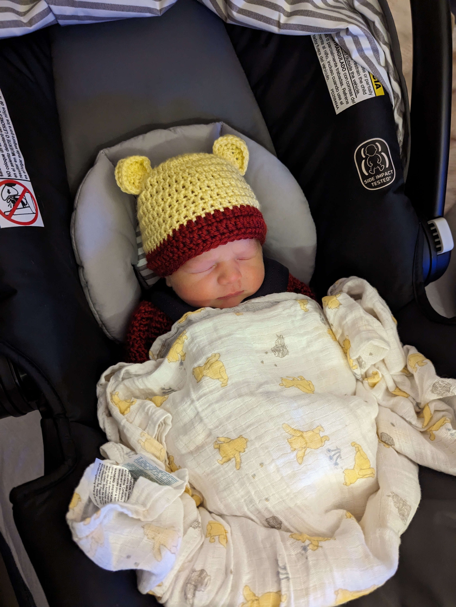
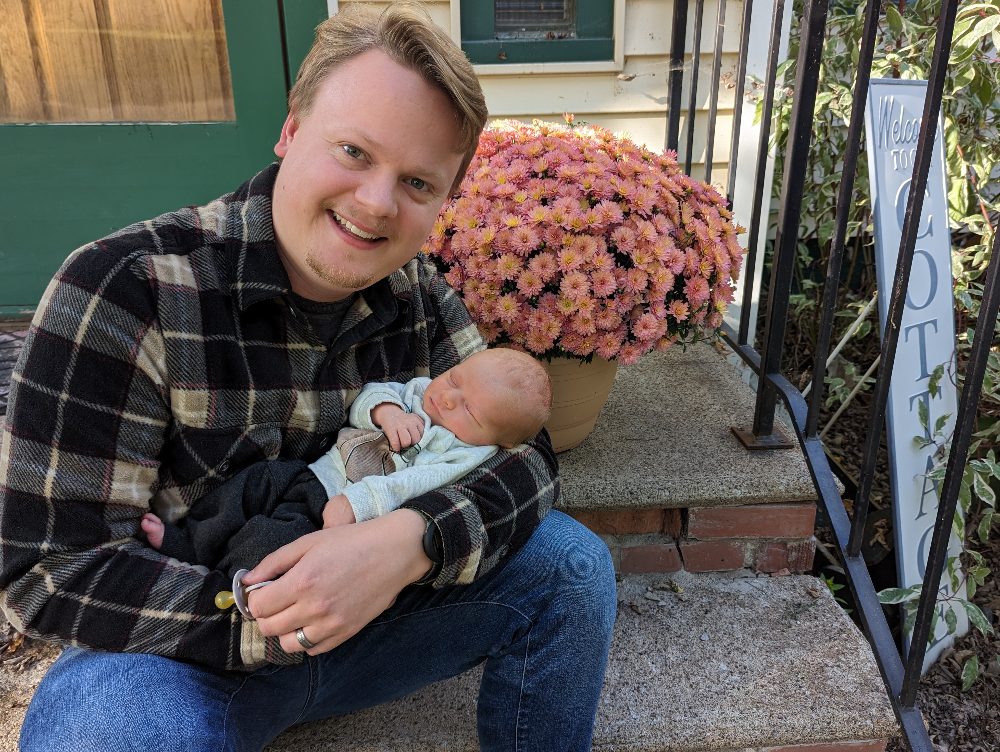

Arrival
The name Peregrine comes from the latin word peregrinus, which means “traveler” or “pilgrim.” That name rang true on September 7, 2023, when Peregrine (Pippin) Erdrich was born!
He was born in Amery, WI, at 9 p.m. that night, and the little rascal managed to inhale amniotic fluid as he arrived. Because of this, he had a rasp to his breathing, which concerned the doctors who quickly put him in an oxygen mask and hooked him up to several monitors. When some time went by and his breathing hadn’t improved, they decided to get Children’s Hospital on the line, who rushed up an emergency team to check him out.
 When the team from Children’s Hospital arrived, they noted that he needed specialized equipment in order to fully expel the fluid from his lungs and that he’d have to make a midnight trip across the St. Croix River into Minnesota. He boarded the emergency vehicle and traversed across hill and dale to Children’s Hospital.
Over the Croix
Mom and Dad arrived the next day, when Mom was on the mend, and he was sleeping away. His powerful lungs were able to expel the fluid before they arrived, and he no longer needed the oxygen mask!
Young Pip and his wee parents stayed at the hospital for one more night, and around noon on September 9, he was finally free from IVs, stickers, and monitors for the first time in his life! He donned his celebratory Pooh outfit and left the hospital in style.
 Back Again
Today, Pippin lives the highlife. He eats when he wants, sleeps when he wants, poops when he wants, and wants for nothing. In fact, he eats so well that he well surpassed his weight goal at his 2-week check-up! He has three cat siblings and two dog buddies who like sniffing him. He has this goofy dad who sings the Addams Family theme song when he’s upset, quickly calming him down. And most importantly, he is a perfectly healthy boy.
